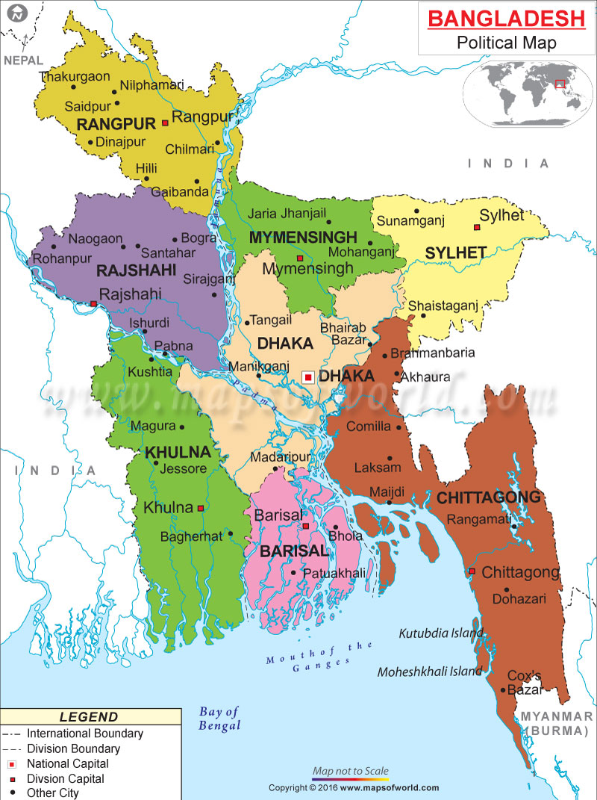

Bangladesh, on the northern coast of the Bay of Bengal, is surrounded by India, with a small common border with Myanmar in the southeast. The country is low-lying riverine land traversed by the many branches and tributaries of the Ganges and Brahmaputra rivers. Tropical monsoons and frequent floods and cyclones inflict heavy damage in the delta region
What is now called Bangladesh is part of the historic region of Bengal, the northeast portion of the Indian subcontinent. Bangladesh consists primarily of East Bengal (West Bengal is part of India and its people are primarily Hindu) plus the Sylhet district of the Indian state of Assam. The earliest reference to the region was to a kingdom called Vanga, or Banga (c. 1000 B.C. ). Buddhists ruled for centuries, but by the 10th century Bengal was primarily Hindu. In 1576, Bengal became part of the Mogul Empire, and the majority of East Bengalis converted to Islam. Bengal was ruled by British India from 1757 until Britain withdrew in 1947, and Pakistan was founded out of the two predominantly Muslim regions of the Indian subcontinent. For almost 25 years after independence from Britain, its history was part of Pakistan's ( see Pakistan ). West Pakistan and East Pakistan were united by religion (Islam), but their peoples were separated by culture, physical features, and 1,000 miles of Indian territory.
Here is some more intersting information about my motherland Bangldesh.